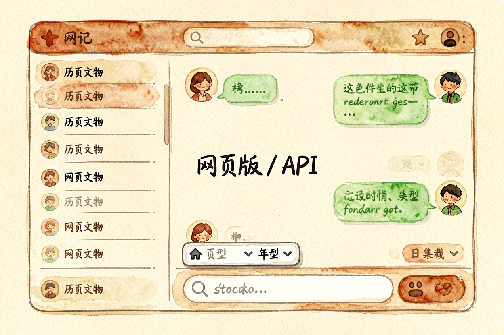
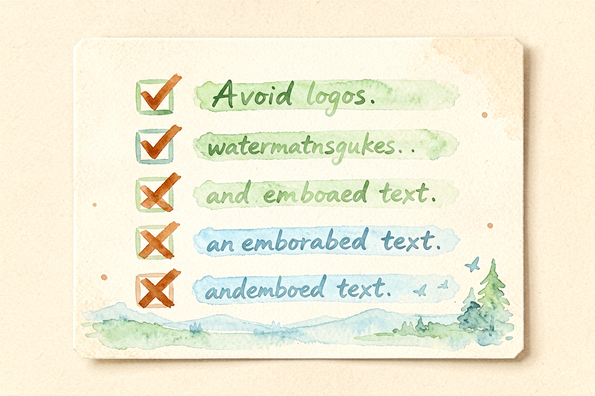
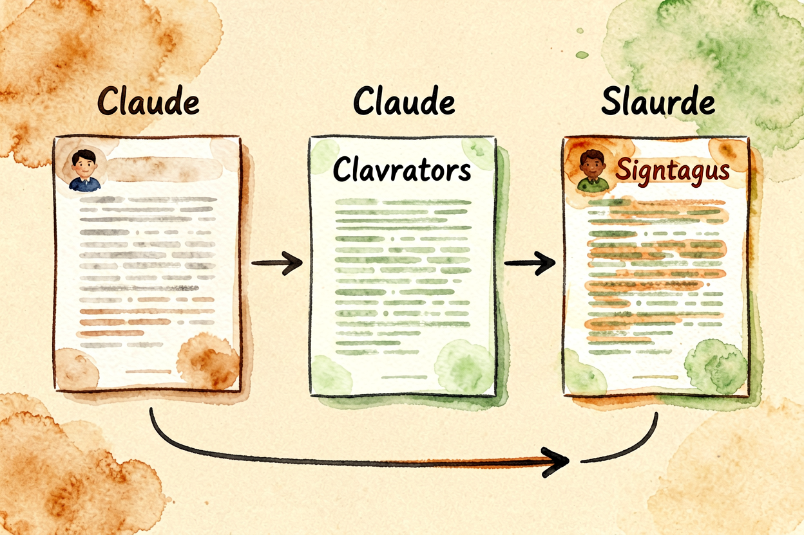

Claude 新手教程：AI 写作与思考的最佳伴侣
Claude 是 AI 写作领域的强者，逻辑清晰、长文稳定、中文理解强。本文从零讲清怎么用，新手一小时上手。
Claude新手教程是本文的核心主题。 !配图1Claude界面概览
{kind=link}
Claude新手入门：AI 写作领域的强者
Claude 是 Anthropic 开发的 AI 模型，以逻辑清晰、长文稳定、中文理解强著称。免费版支持 GPT-4 级别能力，适合写作、研究、编程、分析等任务。国内访问需要代理，但体验稳定。
和AI 写作工具对比里讲的对比不同，本文专注 Claude 本身的使用技巧。Claude 的优势是长文生成稳定、逻辑连贯、中文自然，短板是免费额度有限、国内访问需代理。
Claude新手入门：注册与访问

打开 claude.ai，用邮箱或 Google 账号注册。免费版每月有消息额度限制，足够日常使用。国内访问需要代理，建议使用稳定代理服务。
注册后先做两件事：熟悉界面布局、测试基础功能。Claude 支持多轮对话、文件上传、代码执行，新手建议先熟悉纯文本对话，再逐步解锁高级功能。
Claude新手入门：写出高质量的提示词
Claude 对结构化提示词响应更好，参考AI 提示词怎么写里的 C.L.E.A.R. 框架。示例：
你是资深编辑（角色）。
帮我写一篇800字的公众号推文（任务）。
主题关于AI办公工具，目标读者是职场新人（背景）。
用分点结构，每点配一个例子（输出格式）。Claude 的中文理解比海外模型更自然，直接写中文提示词效果最好。遇到复杂任务，先让 AI 出大纲，再逐段展开，比一次性要长文更稳。
Claude新手入门：五个高频场景实战
场景一：长文写作 Claude 擅长生成结构清晰、逻辑连贯的长文。先让它出大纲，再逐段展开，最后润色。和去除 AI 写作痕迹配合使用，能让输出更自然。
场景二：文档分析上传 PDF、Word、Excel，让 Claude 总结要点、提取数据、生成报告。适合研究、学习、工作场景。
场景三：代码辅助即使不会编程，也能让 Claude 写简单脚本。输出后让它加注释，方便理解。
场景四：学习辅导问「用初中生能听懂的话解释量子计算」，Claude 会换一种表达降低理解门槛。
场景五：头脑风暴 「给我十个关于健康饮食的选题，要求新颖不烂大街」。Claude 能快速产出大量想法。
Claude新手入门：常见误区与避坑

误区一：把所有问题都丢给 Claude实时信息、专业医疗建议、法律判断，Claude 不一定靠谱。重要信息要二次核实。
误区二：提示词太模糊 「帮我写点东西」这种问法，Claude 只能猜你的意图。提示词越具体，输出越精准。
误区三：免费额度用光就停免费版每月额度刷新，不是每天。用完等下月即可，不需要付费。
关于 Claude 新手教程，核心经验是「先熟悉，再深挖」。别一上来就挑战复杂项目，先从简单写作跑通流程，确认理解交互逻辑后再逐步解锁高级功能。
Claude 新手教程的关键是动手试。别看完就忘，当天就写一段文字，让操作成为习惯。用多了自然熟练。掌握 Claude 新手入门的技巧，写作效率会翻倍。

本文信息核对于 2026-09-07。AI 产品的价格、免费额度与功能变动频繁，实际以各工具官网当前说明为准。